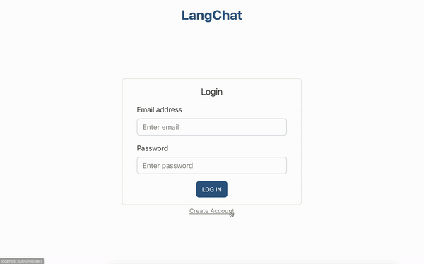
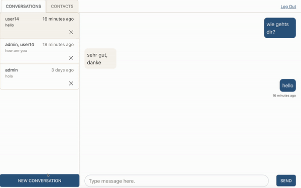
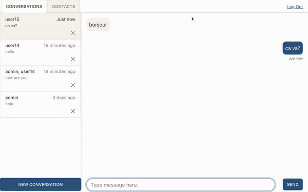

LangChat is a live chat client designed to make finding a compatible language partner fast and convenient. Code for this project can be found here.
If you are a new user to LangChat, create an account, otherwise log in.
On login, you'll be greeted by the chat client shown below. Here you will have access to all of your chats and contacts, as well as the ability to match with new language partners and create new group chats with users in your contacts.
While on the conversations tab, click "New Conversation" to display the new conversation interface.
Select a language that you know and the language that you're learning, and press "find me a partner". Alternatively, start a conversation or group chat from your contacts.
If there is an active user who knows the language you are learning who is learning the language that you know, LangChat will match you and create a chat instance. Otherwise, you will see "Finding partner..." until one is found or you cancel your search.
Save users to contacts by clicking on their username. Once in your contacts, users can be added to group chats.
The backend for this application was built using Django, including Django Channels for Websocket functionality. The frontend was built with React, using the React Context API for state management.